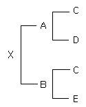
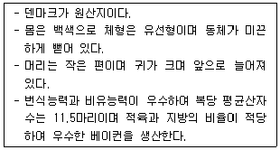
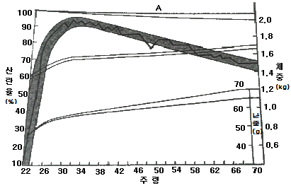
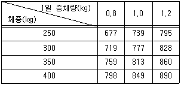
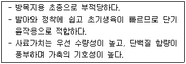

축산산업기사 (2013-09-28 기출문제)
1과목: 가축번식 육종학
1. 혈연관계가 밀접한 개체끼리의 교배로 생성된 후손은?
- 근친교배
- 이계교배의 자손
- 톱교잡종(topcross)
- 누진교배(grading)
(정답률: 83%)

2. Prostaglandin F2α의 생리작용이 아닌 것은?
- 황체퇴행
- 수정란의 착상
- Progesterone의 분비감소
- LH의 분비조절
(정답률: 62%)
3. 수컷의 부생식기 자극과 정자형성 촉진에 주로 관계하는 호르몬은?
- estrogen(에스트로겐)
- androgen(안드로겐)
- progesterone(프로게스테론)
- relaxin(리랙신)
(정답률: 78%)
4. 돼지에서 분만시 가장 많은 태위는?
- 두위와 미위
- 측두위
- 전태위
- 흉두위
(정답률: 67%)
5. 난포낭종이 발생한 소가 성욕이상항진증(nymphomania)이 되는 경우 무슨 호르몬의 분비가 왕성할 때인가?
- 에스토로겐(estrogen)
- 옥시토신(oxytocin)
- 프로게스테론(progesterone)
- 프로락틴(prolactin)
(정답률: 64%)
6. 난소에서 분비되는 호르몬과 거리가 먼 것은?
- oxytocin
- progesterone
- relaxin
- estrogen
(정답률: 62%)
7. 동물별 평균 임신기간이 맞는 것은?
- 소(jersey) : 3⑤일
- 사슴 : 300일
- 밍크 : 100일
- 돼지 : 114일
(정답률: 79%)
8. 닭의 성장률과 가장 관계 깊은 형질로 높은 상관관계를 보이므로 닭의 성장률 측정에 이용하는 척도는?
- 산란성
- 정강이 길이
- 우모색
- 우모발생속도
(정답률: 77%)
9. 닭의 산란능력을 개량하는데 가장 효과적인 선발방법은?
- 후대검정
- 개체선발
- 가계선발
- 결합선발
(정답률: 61%)
10. 고기소 송아지의 이유시 체중에 영향을 미치는 요인이 아닌 것은?
- 어미 소의 비유 능력
- 어미 소의 사료 효율
- 송아지의 유전적 소질
- 송아지의 이유시기
(정답률: 66%)
11. 분만시 태아의 만출과 후산의 배출을 도와주는 호르몬은?
- Estrogen(에스트로겐)
- Oxytocin(옥시토신)
- Prostaglandin(프로스타글란딘)
- Progesterone(프로게스테론)
(정답률: 64%)
12. 돼지의 근친교배 결과로 생길 수 있는 현상은?
- 일반적으로 생산능력을 저하시키는 경향이 있다.
- 잡종강세 현상이 나타난다.
- 산자수, 성장률 등이 향상된다.
- 번식능력이 향상된다.
(정답률: 71%)
13. 가축개량에 대한 기술 중 농가에서 활용되는 가장 일반적인 방법으로 특히 소와 돼지의 번식에 광범위하게 활용되는 것은?
- 유전자 조작
- 형질전환동물생산
- 염색체 조작
- 인공수정
(정답률: 81%)
14. 잡종강세 현상에 대한 설명으로 틀린 것은?
- 잡종 자손의 능력이 양친 중 우수한 쪽보다 못할 수도 있다.
- 유전력이 높은 형질에서 잡종강세가 크게 나타난다.
- 주로 닭과 돼지에서 산업적으로 널리 이용되고 있다.
- 잡종강세는 생존율, 강건성, 번식능력과 밀접한 관계가 있는 형질에서 크게 나타난다.
(정답률: 49%)
15. 일반적인 돼지의 교배적기에 대한 설명으로 틀린 것은?
- 수퇘지를 허용한 시점으로부터 10~25.5 시간의 범위
- 외음부의 점액분비가 시작되는 시기
- 돼지의 후부를 눌렀을 때 부동반믕을 나타내는 시기
- 외음부의 발적, 종창이 최고조로 지나 약간 감퇴한 시기
(정답률: 48%)
16. 다음 X가계도의 근교계수는 얼마인가?

- 12.5%
- 25%
- 37.5%
- 50%
(정답률: 65%)
17. 선발(選拔, selection)의 가장 중요한 기능은?(오류 신고가 접수된 문제입니다. 반드시 정답과 해설을 확인하시기 바랍니다.)
- 우수한 유전형질의 고정
- 가축의 능력 퇴화 방지
- 유전자 빈도의 변화
- 새로운 유전자의 도입
(정답률: 45%)
18. 발정주기 중 소를 제외한 대부분의 가축이 배란(排卵)을 하는 단계에 대한 설명으로 옳은 것은?(오류 신고가 접수된 문제입니다. 반드시 정답과 해설을 확인하시기 바랍니다.)
- 발정휴지기에서 발정기로 이행하는 시기이다.
- 난포로부터 에스트로겐(estrogen)의 분비가 왕성해진다.
- 황체에서 생성되는 프로게스테론(progesterone)의 영향을 받는 시기이다.
- 난소주기(卵巢週期)로 보아서는 황체기(黃體期)에 속하는 시기이다.
(정답률: 42%)
19. 자돈의 한배새끼 이유시 체중을 측정할 때 생후 몇 일령 기준으로 보정하는가?
- 45일령
- 31일령
- 25일령
- 21일령
(정답률: 63%)
20. 닭의 산육능력개량에 중요한 형질은?
- 취소성
- 동기휴산성
- 성장율
- 산란지속성
(정답률: 66%)
2과목: 가축사양학
21. 사료의 단백질 가치 표시방법이 아닌 것은?
- 사료요구율
- 가소화조단백질
- 단백질 효율
- 생물가
(정답률: 66%)
22. 원료사료의 분류 중 성분에 따른 분류가 아닌 것은?
- 단백질 사료
- 전분질 사료
- 지방질 사료
- 농후사료
(정답률: 71%)
23. 다음 중 필수아미노산이 아닌 것은?
- 라이신(lysin)
- 알리닌(alanine)
- 트립토판(tryptophane)
- 트레오닌(theronine)
(정답률: 61%)
24. 다음 보기가 설명하는 품종은?

- Berkshire
- yorkshire
- Hampshire
- Landrace
(정답률: 64%)
25. 다음의 곡류 및 강류사료 중 설사성 사료인 것은?
- 옥수수
- 보리
- 생쌀겨
- 수수
(정답률: 67%)
26. 반추가축에서 조사료보다 농후사료를 더 많이 섭취하면 반추위내에 생성되는 휘발성 지방산 중 생성비율이 가장 많이 증가되는 것은?
- 초산
- 프로피온산
- 낙산
- 글루탐산
(정답률: 55%)
27. 단백질의 영양소로서의 중요한 기능은?
- 체온유지
- 세포의 구성성분
- 해독작용
- 주된 에너지원
(정답률: 69%)
28. 돼지 비육돈에 건물기준으로 배합사료 4kg을 요구한다. 이 때 급여하는 배합사료의 수분함량이 20% 일 경우 실제 급여상태 기준 급여량은?
- 4 kg
- 5 kg
- 6 kg
- 7 kg
(정답률: 70%)
29. 산란계의 산란상태에 따른 산란기별 산란율 및 난중 등의 변화 표 중 A가 의미하는 것은?

- 생존율
- 산란율
- 체중
- 달걀의 크기
(정답률: 61%)
30. 부화율을 높이는데 가장 관계 깊은 비타민은?
- 비타민 E
- 비타민 B6
- 비타민 K
- 비타민 C
(정답률: 63%)
31. 다음 중 사료의 생물가를 평가하려면 알아야 할 것은?
- 소화 가능한 조단백질량과 에너지 흡수량
- 체내 흡수된 질소량과 체네 이용된 질소량
- 체내에 이용된 열량과 분으로 손실된 열량
- 섭취한 조단백질량과 체내에 이용된 에너지량
(정답률: 63%)
32. 닭(가금)에서 가장 많이 사용하는 에너지 표현방법은?
- 총에너지(GE)
- 가소화에너지(DE)
- 대사에너지(ME)
- 정미에너지(NE)
(정답률: 64%)
33. 비육돈의 사료배합과 급여수준 결정에 기준이 되는 것은?
- 체중
- 연령
- 도체의 품질
- 등지방의 두께
(정답률: 55%)
34. 곡물 생육시 또는 수확 후 저장시 곰팡이 발생에 의하여 생성되는 유해물질은?
- 유기산
- 유리지방산
- 아플라톡신
- 유리아미노산
(정답률: 73%)
35. 체내 모든 세포에서 발견되는 아미노산으로 시스틴, 시스테인 및 메치오닌의 공통된 구성성분의 속하는 광물질은?
- 황(S)
- 아연(Zn)
- 셀레늄(Se)
- 마그네슘(Mg)
(정답률: 52%)
36. 체중이 325kg인 종형종의 숫소가 1일 증체량이 1kg인 경우 하루 단백질의 요구량은 몇 g인가?

- 748
- 777
- 795
- 813
(정답률: 66%)
37. 가축의 기초대사 측정시 요구되는 적합한 조건이 아닌 것은? (문제 오류로 보기 내용이 정확하지 않습니다. 정확한 내용을 아시는 분께서는 오류신고를 통하여 내용 작성 부탁드립니다. 정답은 4번입니다.)
- 동물의 영양상태가 양호할 것
- 동물의 소화가 완전히 끝난 상태일 것
- 근육이 완전히 휴식상태일 것
- 복원중
(정답률: 71%)
38. 젖소가 분만 직후 혈액내 칼슘이 부족하여 순환장해, 전신마비, 의식불명, 심하면 ㅎ노수상태에서 사망케하는 질병은?
- 케토시스
- 유열
- 산독증
- 그라스 테타니
(정답률: 66%)
39. 사료의 영양적 가치 평가 중 단백질이 가축 체내에 미치는 영향을 보기 위해 영양율(nutritive ratio, NR)을 조사하는데 급여하는 사료 중 가소화단백질 8%, 가소화에너지 총량(TDN) 72% 일 때 영양율은?
- 8
- 9
- 10
- 11
(정답률: 52%)
40. 육성기에 높은 영양으로 사육을 한 젖소는 초산시 산유량이 떨어졌다. 이유는 무엇인가?
- 성성숙이 빠르기 때문이다.
- 임신기간이 짧아지기 때문이다.
- 유선조직에 비하여 지방조직이 더 발달했기 때문이다.
- 생식기관의 발달이 부진해지기 때문이다.
(정답률: 70%)
3과목: 축산경영학
41. 한계비용에 대한 내용을 바르게 설명한 것은?
- 일정량의 생산에 소요된 총비용을 생산량으로 나눈 것
- 생산량 1단위 증가분을 평균비용의 증가분으로 나눈 것
- 일정량의 생산에 소요된 평균비용을 생산량으로 나눈 것
- 생산량을 1단위 더 생산할 때 추가적으로 들어가는 총비용의 추가분
(정답률: 65%)
42. 축산 경영의 4대 요소로만 구성된 것은?
- 목초지, 고용력, 자본재, 기술
- 목초지, 자가노동, 자본재, 기술
- 토지, 노동력, 자본재, 경영기술
- 토지, 고용력, 자본재, 경영기술
(정답률: 76%)
43. 어떤 육계경영농가에서 평균고정비용 100,000원, 평균유동비용 200,000원, 총고정비용 2,000,000원, 총유동비용 4,000,000원이 투입되었다면 평균총비용은 얼마인가?
- 300,000원
- 2,300,000원
- 6,200,000원
- 6,300,000원
(정답률: 59%)
44. 축산순수익을 표현한 식으로 가장 적절한 것은?
- 축산조수익 - 축산소득
- 축산조수익 - 자본이자
- 축산조수익 - 축산경영비
- 축산조수익 – 축산물생산비
(정답률: 43%)
45. 다음 중 보완관계(補完關係)를 이루고 있는 것은?
- 양계경영과 부업경영
- 양돈경영과 낙농경영
- 양계경영과 채소경영
- 양돈경영과 양계경영
(정답률: 69%)
46. 다음 중 유사비(milk-feed ratio)를 표현한 것으로 가장 적절한 것은?
- 유량 / 사료비
- 구입 사료비 / 유대
- 조사료비 / 유대
- 농후 사료비 / 유량
(정답률: 61%)
47. 축산경영에서 가족노동력의 특징으로 보기에 옳지 않은 것은?
- 작업감독의 불필요
- 물품이나 가축의 애용
- 소득증대를 위해 최대 노력
- 작업시간의 무제한으로 비능률
(정답률: 69%)
48. 다음 중 축산경영 분석을 위한 수익성 지표에 해당되는 것은?
- 당좌비율
- 부채자본비율
- 유동부채비율
- 경영자본회전율
(정답률: 68%)
49. 다음 중 토지의 경제적 성질에 해당되지 않는 것은?
- 부적재성(不積載性)
- 불소모성(不消耗性)
- 불가증성(不可增性)
- 불가동성(不可動性)
(정답률: 64%)
50. 축산경영 조직의 성립에 영향을 미치는 요인 중 시장의 입지와 경제적 거리에 관한 설명으로 옳지 않은 것은?
- 생산자재의 가격은 시장에서 떨어져 있을수록 비싸다.
- 농장에서 시장까지의 경제적 거리가 멀수록 생산자의 수취가격은 낮다.
- 시장의 근접지역에서는 우유·야채 등과 같이 부패하기 쉬운 작목들의 생산이 유리하다.
- 시장에서 멀어질수록 단위가격당 수송비가 높고 수송하기 쉬운 생산물이 조방적으로 생산된다.
(정답률: 51%)
51. 경종농업에서 생산된 사료를 가축에 급여함으로써 축산물이 생산된다는 것은 축산경영의 어떤 특징을 설명하는 것인가?
- 생산물의 저장
- 2차 생산의 성격
- 물량감소의 성격
- 간접적 토지관계
(정답률: 68%)
52. 낙농경영에서 조수입이 1,000만원, 고정비가 500만원, 변동비가 200만원일 때 손익분기조수입은 얼마인가?
- 310만원
- 420만원
- 530만원
- 625만원
(정답률: 58%)
53. 축산경영의 분석 중 재무구조 및 경영의 지불능력 등을 측정하는 분석방법은?
- 수익성 분석
- 안정성 분석
- 효율성 분석
- 생산성 분석
(정답률: 71%)
54. 채란계 경영에서 사료 1kg 당 가격이 200원, 계란 1개의 가격이 90원인 경우, 난사비(egg feed ratio)는 얼마인가?
- 0.22
- 2.2
- 4.5
- 45
(정답률: 47%)
55. 2013년 현재 우리나라와 자유무역협정(FTA)을 체결한 국가가 아닌 것은?
- 칠레
- 뉴질랜드
- 페루
- 싱가포르
(정답률: 47%)
56. 우리나라 축산경영의 변화에 관한 설명으로 옳지 않은 것은?
- 축산경영의 규모화가 진전되면서 축산분뇨의 문제가 중요한 과제로 대도되고 있다.
- 농업의 상대적 사양화와 더불어 농업 내 축산업의 비중도 점차 낮아지는 경향을 보이고 있다.
- 한우경영의 경우에도 조사료 생산기반이 취약하여 사육규모 확대가 어렵고 배합사료 의존도가 높다.
- 축종별로 다소 차이는 있으나 소규모의 부업적 축산경영에서 점차 전업적 축산경영으로 전환되고 있다.
(정답률: 76%)
57. 다른 생산여건이 일정할 경우, 축산물 가격은 올라가고 사료가격은 내려간 경우, 조수익과 경영비의 변화에 관한 내용으로 가장 적절한 것은?
- 조수익과 경영비가 모두 늘어난다.
- 조수익과 경영비가 모두 줄어든다.
- 조수익은 늘어나고 경영비는 줄어든다.
- 조수익은 줄어들고 경영비는 늘어난다.
(정답률: 72%)
58. 축산경영에 있어 고정자본재를 무생고정자본재와 유생고정자본재로 분류할 때, 다음 중 유생고정자본재에 해당되는 것은?
- 동물자본재
- 건물자본재
- 축산기구자본재
- 토지개량자본재
(정답률: 74%)
59. 다름 중 브로일러 양계경영의 특징에 해당되지 않는 것은?
- 대량생산이 가능하다.
- 출하조정이 곤란하다.
- 자본회전율이 빠르다.
- 수송 및 보관이 용이하다.
(정답률: 53%)
60. 다음 중 비육우경영의 조수입을 증대시키는 방법이 아닌 것은?
- 송아지 판매두수를 늘린다.
- 송아지 사료비를 절감한다.
- 송아지 판매단가를 높인다.
- 기간내 송아지 생산효율을 높인다.
(정답률: 53%)
4과목: 사료작물학
61. 공간 이용성과 토양 양분의 이용성을 제고하고 가축에게는 영양균형과 기호성을 높이는 장점을 가진 작부방식은?
- 단작
- 간작
- 혼작
- 윤작
(정답률: 65%)
62. 우리나라에서 알팔파 재배시 일반적인 제한 요인에 대한 설명으로 틀린 것은?
- 신규조성시 근류균의 접종이 필요하다.
- 수확기계 및 장비가 추가로 필요하다.
- 배수가 잘 되도록 하며 산성토양의 교정이 필수적이다.
- 미량원소 특시 붕소(B)의 사용이 효과적이다.
(정답률: 62%)
63. 수단그라스(Sudangrass)계 잡종에 대한 설명으로 맞는 것은?
- 생육이 빠르며 토양이 척박한 곳에서도 잘 자란다.
- 품종은 윈톡(wintok), 카유스(cayuse), 아켈라(akela) 등이 있다.
- 초장이 낮은 어린시기의 것을 청예로 이용할 경우 청산 중독의 위험이 있다.
- 파종량은 조파의 경우 ha 당 80~120kg 정도이다.
(정답률: 63%)
64. 다음 설명에 적합한 초종은?

- 레드 클로버
- 켄터키 블루그라스
- 페레니얼 라이그라스
- 리드커네리그라스
(정답률: 54%)
65. 다음 중 사일리지 제조시 발효에 영향을 미치는 요인과 가장 거리가 먼 것은?
- 재료의 수분함량
- 재료의 길이(크기)
- 재료의 비타민 함량
- 진압의 정도
(정답률: 59%)
66. 일반적으로 옥수수 silage의 1m3당 무게로 가장 적합한 것은?
- 350 kg
- 450 kg
- 650 kg
- 850 kg
(정답률: 48%)
67. 복원중(문제 오류로 문제 및 보기 내용이 정확하지 않습니다. 정확한 내용을 아시는 분께서는오류신고를 통하여 내용 작성 부탁드립니다. 정답은 4번입니다.)
- 복원중
- 복원중
- 복원중
- 복원중
(정답률: 65%)
68. 건초용으로 재배되는 사료작물들은 수량이 많고 기호성이 좋은 상번초(上繁草)들이 주가 된다. 다음 중 상번초에 속하지 않는 초종은?
- 오차드그라스
- 티머시
- 톨 페스큐
- 켄터키블루그라스
(정답률: 51%)
69. 우리나라 혼파초시 조성시 가장 많이 사용하는 화본과의 주 초종은?
- 티머시
- 레드톱
- 톨 페스큐
- 오차드그라스
(정답률: 64%)
70. 신규 초지 조성시 석회의 사용은 매우 중요하다. 다음 중 석회의 이용과 관련이 먼 것은?
- 근류균의 생존 향상
- 토양의 산성 및 활성알미늄 중화
- 칼슘과 마그네슘 공급
- 무기 질소의 공급
(정답률: 54%)
71. 사일리지 제조시 첨가물과 그 작용을 연결시키는 것 중 잘못된 것은?
- 개미산 – pH를 저하
- 초상아황산소다 – 유해발효를 억제
- 요소 – 재료의 양분을 보강
- 당밀 – 젖산생성을 억제
(정답률: 63%)
72. 중북부지방에서 작부체계 조합시 주작물(하계작물)로 주로 이용되는 작물은?
- 호밀
- 보리
- 옥수수
- 이탈리안 라이그라스
(정답률: 51%)
73. 일정한 재배지역에서 적합한 사료작물을 선별하기 위한 3대 구성요소가 아닌 것은?
- 환경
- 작물
- 농업기계
- 가축
(정답률: 69%)
74. 다음 중 중북부지방의 답리작 사료작물로 가장 알맞은 것은?
- 연맥
- 호밀
- 수단그라스
- 이탈리안 라이그라스
(정답률: 59%)
75. 1ha에 질소 90kg을 주어야 할 때 5000m2에는 요소를 얼마나 사용해야 하는가? (단, 요소의 질소성분을 50%로 계산한다.)
- 50 kg
- 70 kg
- 90 kg
- 120 kg
(정답률: 62%)
76. 사일로(silo) 설치시 비용이 가장 적게 드는 것은?
- 탑형사일로
- 기밀사일로
- 벙커사일로
- 트렌치사일로
(정답률: 54%)
77. 중부지방에 있어서의 개량목초의 추파 적기는?
- 11월 중순 ~ 11월 하순
- 10월 중순 ~ 11월 초순
- 7월 중순 ~ 8월 초순
- 8월 하순 ~ 9월 중순
(정답률: 56%)
78. 건초를 장기간 보관하기 위해서는 재료의 수분함량이 중요하다. 다음 중 건초를 6개월 이상 장기간 저장하고자 할 때 알맞은 수분 함량은?
- 12 ~ 15%
- 15 ~ 20%
- 20 ~ 25%
- 25 ~ 30%
(정답률: 59%)
79. 콩과(두목)목초의 일반적인 특성과 거리가 먼 것은?
- 뿌리는 곧은 뿌리로 되어 있다.
- 종자는 등과 배 쪽에 봉합선을 따라서 벌어지는 꼬투리 안에 있다.
- 줄기는 대체로 속이 비어 있고, 둥글며 뚜렷한 마디가 있다.
- 목초의 뿌리에는 질소고정을 할 수 있는 뿌리혹박테리아를 갖는다.
(정답률: 65%)
80. 건초 조제시 태양으로 건조할 때 함량이 높아지는 비타민은?
- 비타민 A
- 비타민 B
- 비타민 C
- 비타민 D
(정답률: 74%)